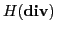
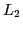

We present a technique based on element agglomeration for constructing coarse subspaces of: (a) the lowest order tetrahedral Nédélec space, and (b) the scalar piecewise-linear finite element space, in both cases assuming general unstructured mesh. The constructed coarse spaces, together with coarse

and
spaces described in our previous work, form an exact sequence with respect to the exterior derivative operators (for domains homeomorphic to a ball). The constructed coarse counterparts of the Nédélec and Raviart-Thomas spaces locally contain the vector constant functions, whereas the respective coarse version of the scalar piecewise-linear space locally contains all linear functions. These properties hold regardless of the shape of the agglomerates, as long as each agglomerate stays homeomorphic to a ball (which is easily ensured in practice). We illustrate the approximation properties of the constructed coarse spaces as well as the convergence of respective two-level AMGe methods associated with them.